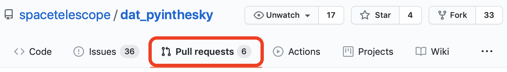
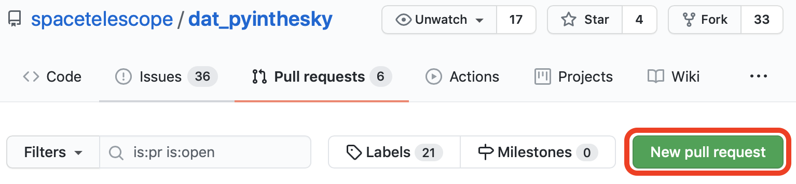
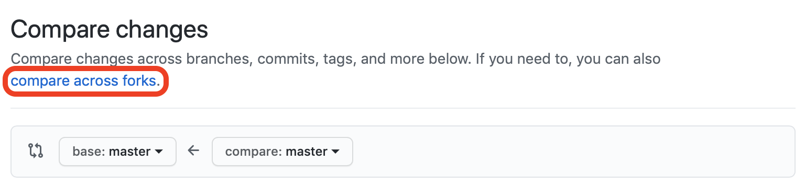
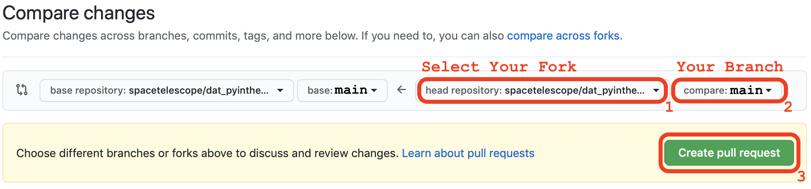

Making a Pull Request (PR)
Making a Pull Request (PR)¶
Step 1: Open PR Tab on GitHub
To create a pull request, navigate to the STScI dat_pyinthesky repository on GitHub and click on the Pull Request:
{kind=link}
Step 2: Click New PR Button
{kind=link}
Step 3: Compare Across Forks
{kind=link}
Step 4: Select Your Fork and Branch
Use the drop down menu to select your fork and branch. If you can not find your branch, first try to refresh the page. If you still can not find your branch, something probably went wrong in the Git and GitHub Workflow section.
{kind=link}
Note
Make sure the base repository (left side) is set to the spacetelescope/dat_pyinthesky and main branch.
Step 5: Write a Description and Create PR
Once the PR form pops up, fill in the title with the name of your notebook or project. In the description box, leave a description of your notebook and the data it uses.
Tip
If you copy and paste the checklist in the Check List section, it will render as a checklist with radio buttons you can toggle any time.
{kind=link}
Step 6: Updating Your PR
Once the PR is created, you can update it by pushing new changes to your fork. This means that you can simply follow the steps described in the Git and GitHub Workflow section and GitHub will automatically update your PR to reflect the changes.
See also
For more information on making pull request visit the GitHub PR documentation